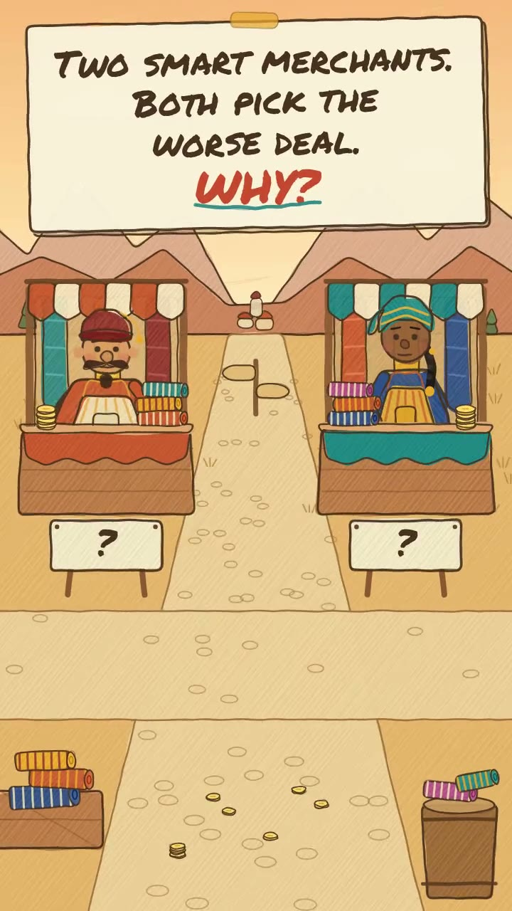
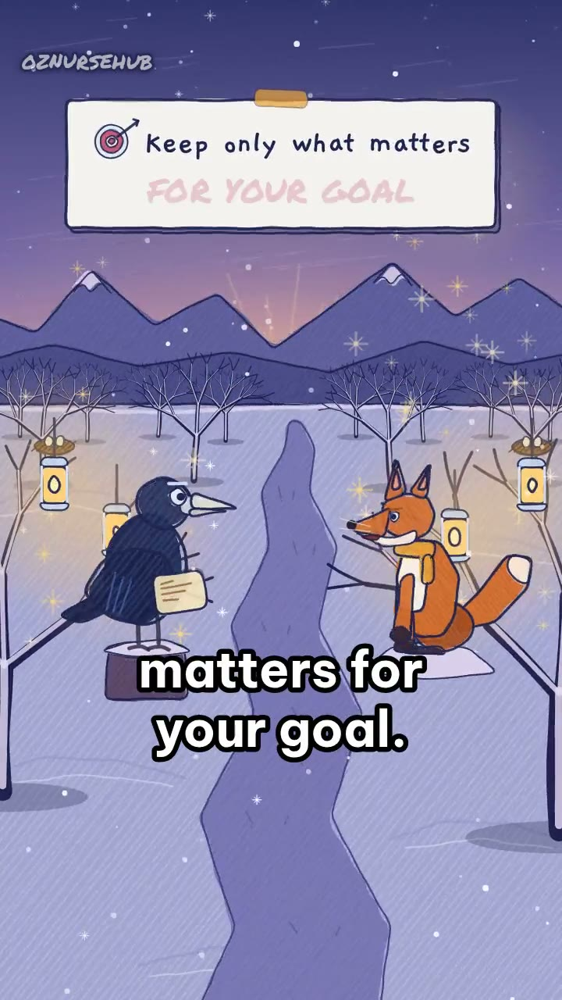
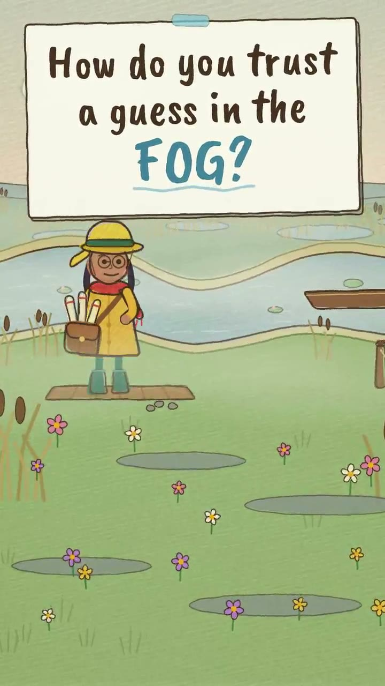
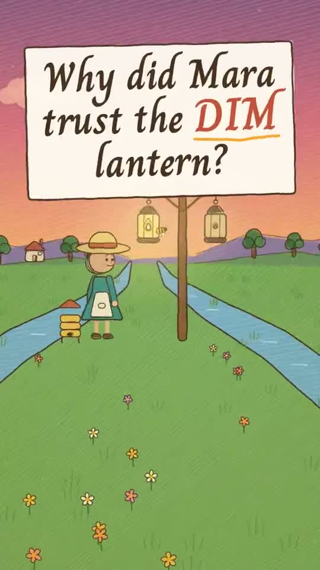
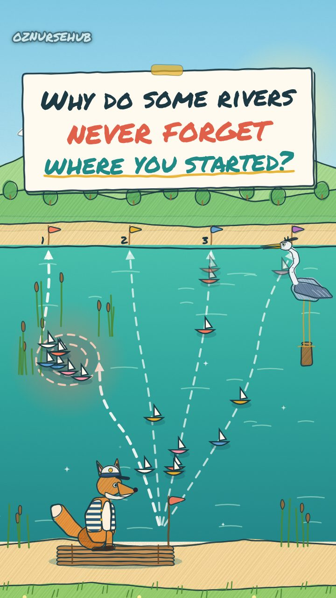
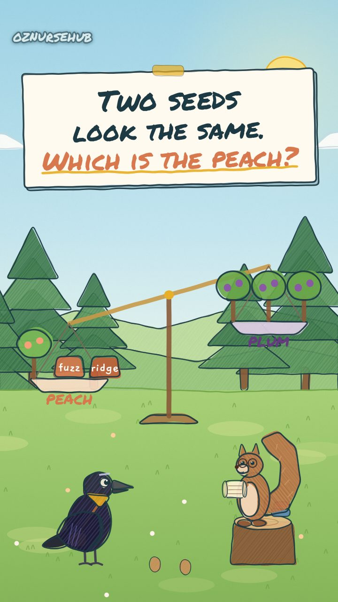

The Fable Library
A little story.
A new perspective.
Small stories to spark curiosity. Find a cover, open a story, and take a moment to reflect.
THE OZ NURSE HUB COLLECTIONWatch · Read · Reflect

FABLE NO. 01The Merchants
The Merchants
of the Crossroads
Nash equilibrium
Watch · Read · Reflect

FABLE NO. 02The Fox
The Fox
and the Rook
Rate-distortion theory
Watch · Read · Reflect

FABLE NO. 03Mira and
Mira and
the Marsh Map
Finding a steadier path
through uncertainty

FABLE NO. 04Mara and
Mara and
the Two Lanterns
A little light.
A new perspective.

FABLE NO. 05The Fox and the
The Fox and the
River of Returns
Spectral gap and mixing time
Watch · Read · Reflect

FABLE NO. 06Mina and
Mina and
the Two Seeds
Start with what you know.
Let the evidence tip the scale.
1 / 6
Swipe or scroll sideways to browse. Select a cover to open its story.
A quiet moment. A fresh way to think.